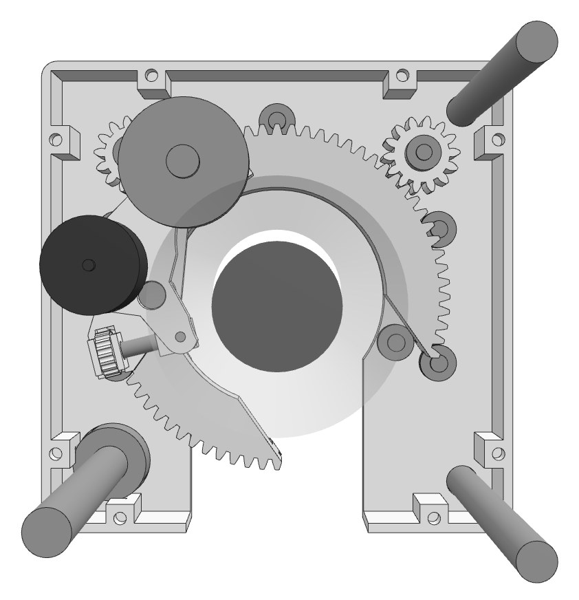
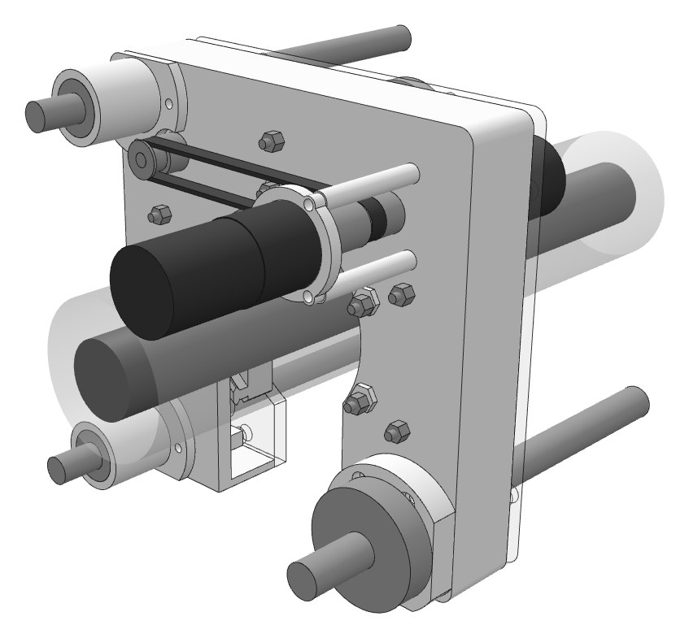
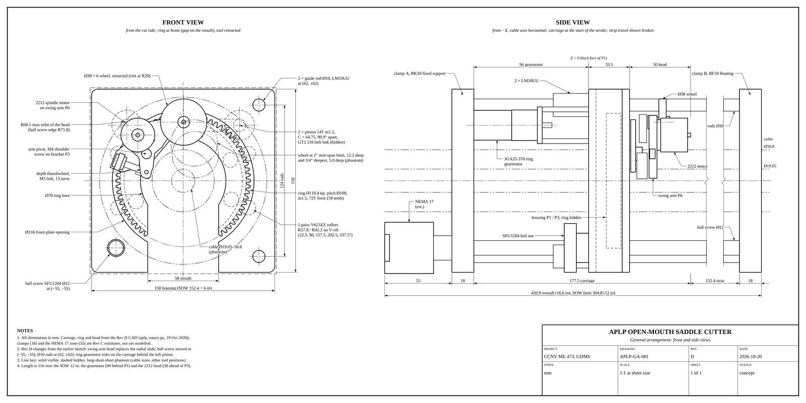
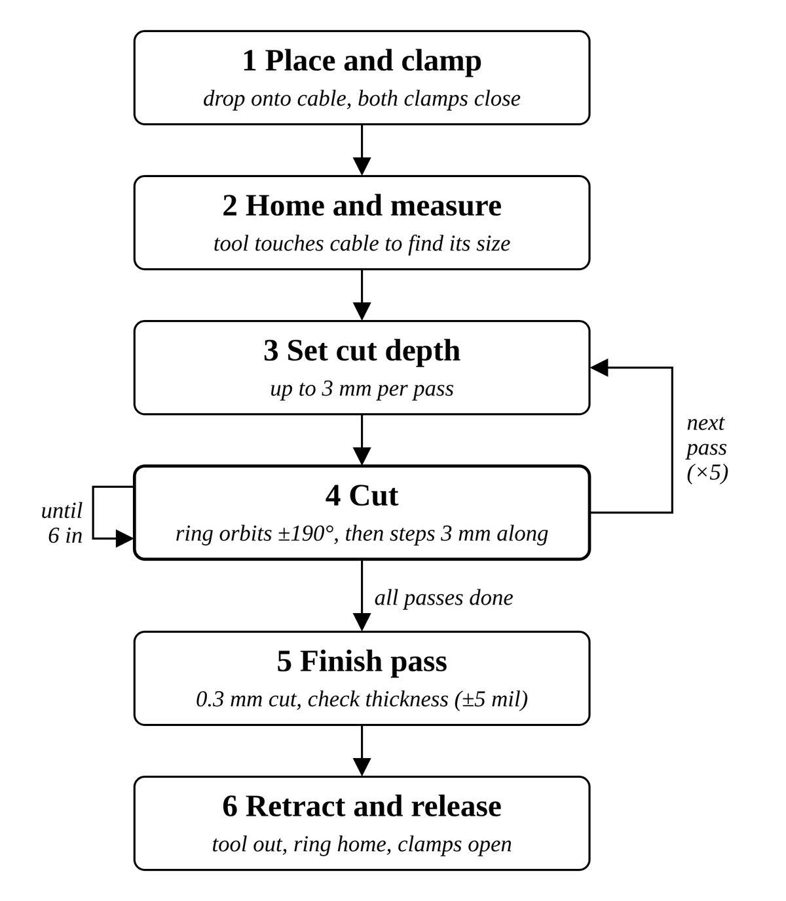
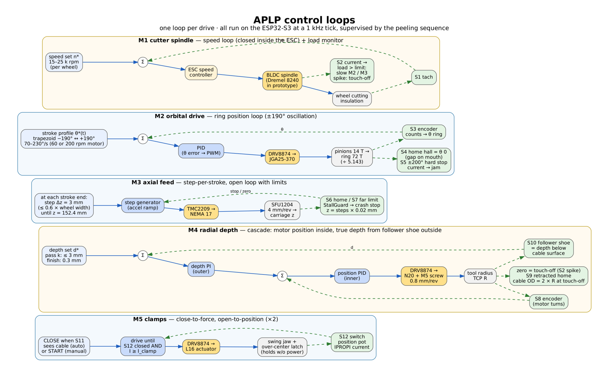
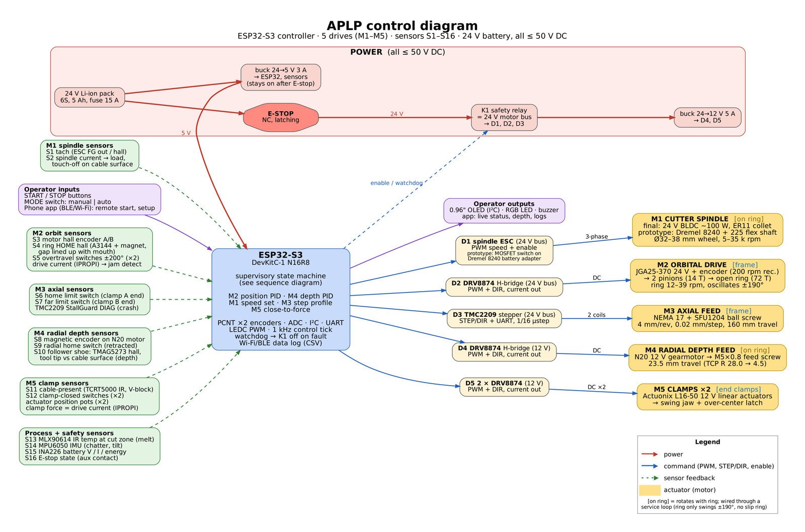
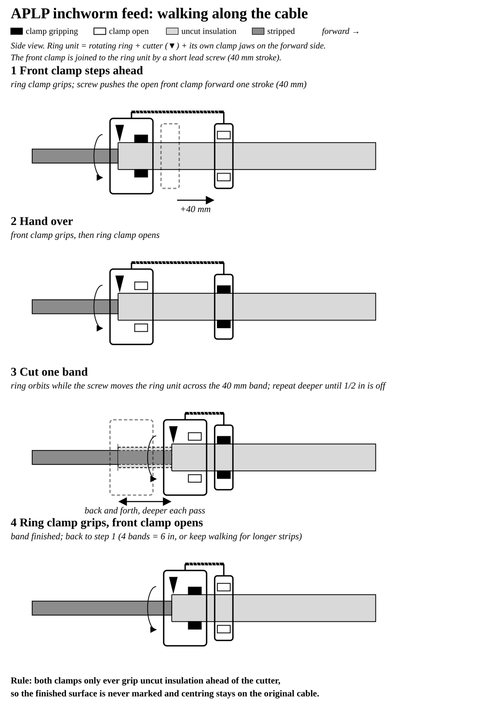

Automated Power Line Peeler (APLP)
A portable machine that strips insulation from installed power cable to a set thickness, without anyone holding the knife
Fall 2026 – Spring 2027 · updated 30 October 2026
- Cable
- 19–51 mm
- Envelope
- 6×6×12 in
- Mass
- ≤ 20 lb
- Power
- < 500 W
Abstract
Splicing or terminating a power cable starts with removing its insulation, and today that is done by hand with a knife or a manual stripper. The APLP is a clamp-on machine that does the job by itself: it closes on a cable between 3/4 in and 2 in in diameter, measures it, and removes up to 1/2 in of insulation over a 6 in length, leaving the remaining wall within 5 mil. Everything has to fit in a 6 × 6 × 12 in box, weigh under 20 lb and run on less than 500 W at 50 V DC or below. Our design is an open-mouth saddle: a C-shaped ring gear drops over the cable, orbits a small high-speed burr around it, and a ball screw walks the ring along the strip while a follower wheel holds the cut depth. This page follows the project from requirements to the prototype due on 17 November.

Point at a partDrag to turn the model, scroll or pinch to zoom.
The problem
The statement of work from General Dynamics Mission Systems asks for a device that peels insulation automatically once it is placed on the line. The hard numbers are below. The sponsor ranks the trade-offs as size first, then weight, then power, and expects a microcontroller, mostly off-the-shelf parts, 3D-printed structure and a weatherized final design.
| Quantity | Requirement | Note |
|---|---|---|
| Cable outside diameter | 19–51 mm (3/4–2 in) | 2.67 : 1 range, the hardest requirement |
| Insulation removed | up to 12.7 mm (1/2 in) | read as radial |
| Remaining-wall tolerance | ±0.127 mm (5 mil) | to be revisited with sponsor |
| Strip length | ≥ 152.4 mm (6 in) | |
| Envelope | 6 × 6 × 12 in | |
| Mass | ≤ 20 lb | |
| Power | < 500 W, ≤ 50 V DC |
The worst case is a 2 in cable with the full 1/2 in taken off. That is a tube of insulation with an outer radius of 25.4 mm, an inner radius of 12.7 mm and a length of 152.4 mm:
V = π(25.42 − 12.72) × 152.4 ≈ 231 700 mm3(1)
About 232 cm3 of cross-linked polyethylene has to become chips, inside a box that is barely wider than the cable is long. Almost every later decision traces back to that volume and the 500 W ceiling.
The machine
We started from the pipe saddle machine, a tool that welders clamp onto pipe to orbit a cutting torch around it. Scaled down to roughly 1/2.3 and given a cutter in place of the torch, it already does most of what the APLP needs. Four changes adapt it to cable.
The module has four main parts: an open ring gear that carries the cutter around the cable, an axial stage that moves the ring along the strip, two end chucks that hold the cable, and a follower wheel that sets the cut depth. Section 3 explains how each one works.


The team's current Fusion 360 assembly measures 152 × 149 × 290 mm, inside the 6 × 6 × 12 in limit.

Mechanical principles
Each function of the machine is handled by its own mechanism. This section takes them in the order the cable meets them.
Ring drive
The ring gear has a 58 mm gap, so the machine drops onto a cable from the side. A gap in a gear means one pinion always loses mesh for part of the turn. Two 14-tooth pinions set 91° apart, linked by a belt, solve that: while the gap passes one pinion, the other is still driving. The 72-tooth ring turns 5.14 times slower than the pinions.
nring = nmotor × 14/72 = 200 rpm / 5.14 ≈ 39 rpm(2)
The ring swings ±190° and reverses instead of turning continuously. That covers the full circumference with 20° of overlap, and the cutter's wiring can follow it without a slip ring.
Axial feed
The ring carriage rides on two Ø10 mm guide rods and a 12 mm ball screw with 4 mm lead and 160 mm of travel, driven by a NEMA 17 stepper. At 1/16 microstepping one step moves the carriage 0.02 mm. The carriage steps 3 mm at the end of each ring stroke.
Cutter
A high-speed spindle on a swing arm carries the cutting tool. The prototype uses a Dremel. The final version uses a 24 V brushless motor and a Ø4 mm burr at about 20 000 rpm, which needs about 62 W at the worst case (Section 8).
Depth datum
Depth is set by a follower wheel that rides on the cable surface next to the cutter. The cable bends and the clamps squeeze it by more than 5 mil, so the cut has to be measured from the cable itself and never from where the arm thinks it is. A gnawing rodent works the same way, bracing its upper teeth on the surface it cuts.
Clamping and centring
Two split chucks, one at each end, hold the cable on the ring axis while the ring works between them. Each chuck has a hinged gate so it can open around an installed cable. On a horizontal cable each chuck needs about 164 N of grip; on a vertical cable, where it also carries the machine, about 600 N.
Cable support at the cut
Between the chucks the cable can bow away from the cutter. We are adding two spring-loaded rollers on the ring, at 120° and 240° from the cutter, that press the cable against the follower wheel at about 40 N each. A small motor sets the spring preload for each cable size, and the rollers ride on uncut insulation just ahead of the cut.
Chip removal
To be designed. About 232 cm3 of chips have to leave the machine without jamming the gears, the rollers or the ball screw.
One peeling cycle
An operator places the machine on the cable and presses start. From there the cycle runs on its own. The tool touches the cable before cutting, and the spindle current spike at contact gives the controller the actual cable diameter, so one machine handles every size in the range without a setting from the operator.

Material comes off in roughing passes of up to 3 mm. In each pass the ring swings through its arc, the carriage steps 3 mm along the cable, and the ring swings back. After about five passes a 0.3 mm finishing pass brings the wall to size, and the follower wheel reports the remaining thickness.
Our cycle-time model takes each pass as the slower of two limits: how fast the ring can sweep, and how fast the spindle power can turn insulation into chips. With a 200 rpm orbit motor the worst case comes to about 10.7 minutes. A faster orbit motor and a 150 W spindle would bring it to 5–6 minutes.
Try the cycle-time model
This is the same model as our spreadsheet. Move the inputs and the end view, the pass schedule and the cycle time update. The defaults are the worst case in the statement of work.
removed left on the cable
- Cycle time
- Volume removed
- Passes
- Slowest step
| Pass | Depth | Volume | Time | Limited by |
|---|
Assumptions: 72 : 14 ring-to-pinion ratio, ±190° stroke with 0.2 s to reverse, 3 mm axial step, roughing passes up to 3 mm, a 0.3 mm finish pass at 75% ring speed, specific cutting energy 0.1 J/mm3, and 50 s for clamping, homing and release. Removal stops at least 5 mm from the cable centre.
Control
An ESP32-S3 runs a supervisory state machine that steps through the peeling cycle in Section 4, with a 1 kHz control tick underneath it. Each drive has its own loop:
| Drive | Job | Loop | Prototype |
|---|---|---|---|
| M1 spindle | Turn the cutter | Speed, closed in the ESC; current watched for load and touch-off | Dremel, by hand |
| M2 orbit | Swing the ring ±190° | Position PID on the motor encoder, home from a Hall sensor | motorized |
| M3 axial | Move the ring along the cable | Stepper, open loop with limit switches and stall detection | motorized |
| M4 depth | Set the cut depth | Cascade: motor position inside, follower-wheel depth outside | thumbwheel |
| M5 clamps | Close the chucks | Drive until the switch closes and current reaches the set grip | manual latch |
Two details make the machine work on any cable size without setup. The spindle current jumps when the tool first touches the cable, which gives the controller the cable diameter. The depth loop then reads the follower wheel, so the cut depth is relative to the real surface.

Electronics
Power comes from a 24 V six-cell lithium-ion pack with a 15 A fuse. An emergency stop opens a safety relay on the motor bus while the 5 V logic supply stays up, so the controller can log what happened. Peak draw is about 140 W, well under the 500 W limit. The ESP32-S3 runs out of pins, so slow inputs go through an MCP23017 expander and slow analog signals through an ADS1115.

| Measures | Part | Used for |
|---|---|---|
| Cable present | TCRT5000 IR | Automatic start when placed |
| Ring home | A3144 Hall + magnet | Line the gap up with the mouth |
| Ring overtravel | 2 sealed microswitches | Hard stop at ±200° |
| Cut depth | TMAG5273 Hall on follower wheel | Depth loop, final thickness check |
| Spindle current | ESC current output | Touch-off and load |
| Cut temperature | MLX90614 IR | Slow down before the insulation melts |
| Battery | INA226 + shunt | Power and energy per strip |
Firmware
Firmware structure, state machine code and a link to the source repository will go here.
Cutting analysis
To size the spindle and clamps we estimated cutting loads from the specific cutting energy of polyethylene, taken as 0.1 J/mm3 for a sharp tool and 1.0 J/mm3 for an abrasive wheel, with a safety factor of 3 on clamp force. The table below compares the three ways of cutting we considered, for the worst-case cable.
| Method | Power | Cutting force | Cycle | Verdict |
|---|---|---|---|---|
| Ø4 mm burr, 20 000 rpm | 62 W | 14.7 N | ≈ 10.7 min | selected |
| Abrasive wheel | 300 W | low | ≈ 13 min | power-bound |
| Skiving blade, full depth | — | 508 N | — | rejected |
The burr's 14.7 N of tangential force needs only 0.37 N·m at the ring and 164 N of grip from each chuck. Cable deflection under that load stays below 0.03 mm. A blade taking the full depth in one pass would need about 5.7 kN of clamp force and would crush the insulation under the jaws, which ruled it out. One load turned out larger than the cut itself: if the machine hangs on a vertical cable, each chuck must hold about 600 N to carry the machine's weight with margin.
Manufacturing
All structural parts are 3D printed on a Bambu Lab P2S (256 × 256 × 256 mm build volume) in PETG or ASA, with four walls and 40% gyroid infill. Every part was laid out to print without supports. The Rev D set is 19 parts, about 300 cm3 of plastic and under 400 g. Bearings, screws, rods, the ball screw and the motors are off-the-shelf.
| Item | Part | Qty | Source |
|---|---|---|---|
| — | to come, 24 Nov | — | — |
Bench tests
On 15 October we tried a Dremel and a bench sander on a sample cable. Both cut the jacket without melting it, though both needed hand force to keep cutting. In Test 3 we turned a 7.21 mm cable under a Dremel abrasive wheel at 5 s per revolution while feeding it 125 mm in 30 s.
The result was a clean helical groove with a pitch of 20.8 mm, six turns long. The groove is about 1.1 mm wide, so it touched only 5% of the surface. Clearing the whole surface at the same settings would take about 114 revolutions, or 9.5 minutes, which agrees with the cycle-time model. Test 4 will add a wattmeter on the Dremel and measure the groove volume, so we can replace the 0.1 J/mm3 estimate with a measured value.
Prototype
The first prototype is due on 17 November. Photos, test videos and results will go here as it is built.
| Test | Cable | Depth | Cycle time | Result |
|---|---|---|---|---|
| Test 4 | — | — | — | to come |
| Test 5 | — | — | — | to come |
Legacy models
The design went through several models before the current one. Each solved a problem the one before it had.
| Model | Date | What changed |
|---|---|---|
| Concept sketches A–D | Sep 2026 | Four ways to remove insulation, scored in a Pugh matrix |
| Saddle Rev C | 18 Oct | Open ring on a ball-screw stage, Dremel cutter on a flex shaft |
| Saddle Rev D | 19 Oct | Swing-arm cutter replaced the radial slide, which hit the ball screw as it orbited (Figure 1) |
| Fusion v3 | 20 Oct | Split three-jaw chucks with hinged gates; frame inside the 6 × 6 × 12 in envelope |
| Inchworm variant | 21 Oct | Clamp inside the ring plus a walking front clamp; planned upgrade |

Concepts considered
We scored nine concepts in a weighted trade study, once with the sponsor's priorities for the final product and once with prototype risk and ease of manufacture weighted highest. The open saddle came out on top for the prototype. The inchworm variant scored highest for the final product, because walking along the cable would let the machine shrink to 7–8 in long, and we keep it as the planned upgrade.
| Concept | Idea | Status |
|---|---|---|
| A | Split ring-gear lathe that closes around the cable | merged into E/F |
| B | Three skewed rollers that crawl along the cable in a helix | dropped |
| B2 | Opposed V-jaw carrier with a radial slide and spindle | dropped |
| C | Band or chain crawler based on the pipe saddle machine | merged into E/F |
| D | “Pencil sharpener” die with four fixed blades | rejected: needs 1 274 N of thrust, rollers give 630 N |
| E | Open-mouth saddle with swing-arm cutter (Rev D CAD) | parts carried into F |
| F | Open saddle with split end chucks (Fusion v3) | building for 17 Nov |
| G | Ring-mounted clamp plus inchworm feed | planned upgrade |
| H | C-ring with a fixed skiving blade and spring pads | bench test pending |
Precedents from nature
No animal removes a measured layer from a cylinder, but several solve parts of the problem. A gnawing rodent braces its upper incisors on the object and cuts with the lower ones, so the cut depth is set by the surface it is cutting, the same principle as our follower wheel. Inchworms move by anchoring one end, pushing the other forward and re-anchoring; their thrust comes from grip, not from friction under a wheel, which is exactly why concept D failed and concept G works. Marc Brunel's 1818 tunnelling shield, often cited as the first engineering design copied from an animal, came from watching the shipworm bore through ship timbers.
Schedule
| Date | Milestone | Status |
|---|---|---|
| 22 Sep | Project requirements | done |
| 29 Sep | Conceptual design, Pugh matrix, Gantt chart | done |
| 15 Oct | Formal peer review | done |
| 24 Oct | Trade study and schedule for sponsor | done |
| 10 Nov | Informal peer review | next |
| 17 Nov | Prototype built, first report draft | in progress |
| 24 Nov | Manufacturing drawings and bill of materials | |
| 8 Dec | Final presentation | |
| 17 Dec | Final report |
Team
- NameRole
- NameRole
- NameRole
- NameRole
Instructor: Prof. Sadegh. Sponsor contact: to be added.
Documents
- Cutting calculations
- Conceptual design report
- Manufacturing drawings and bill of materials
- CAD files (STEP and STL)
- Final presentation
- Final report
- Expo poster